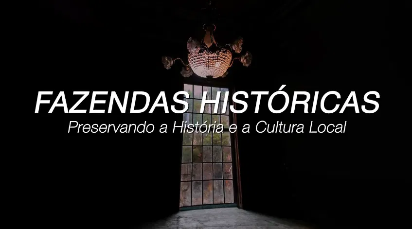
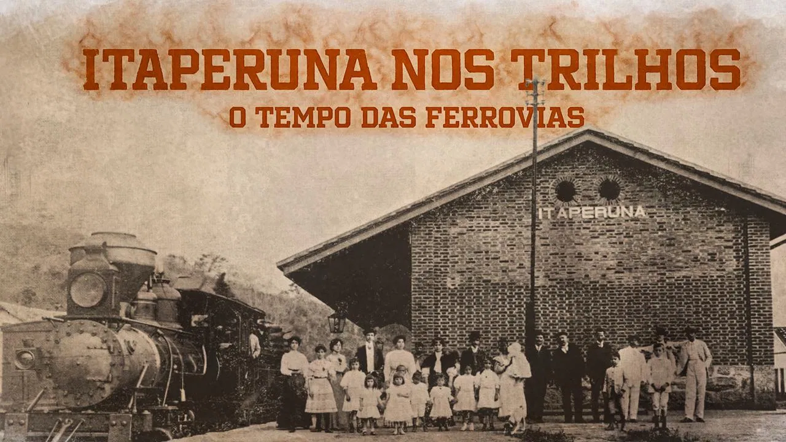

Documentários sobre o patrimônio histórico, as fazendas centenárias e as memórias vivas da região de Itaperuna e do Norte Fluminense.

Uma jornada pelo Noroeste Fluminense e sua tríplice divisa com Minas Gerais e Espírito Santo. O documentário explora a formação histórica, econômica e social da região pelos vales dos rios Muriaé, Carangola e Itabapoana — investigando a ocupação do século XIX, o ciclo do café, o patrimônio arquitetônico das fazendas centenárias e uma reflexão necessária sobre a mão de obra escravizada e a memória dos povos que moldaram esse território.
Assistir no YouTubeProjeto cultural viabilizado pelo Governo Federal, Ministério da Cultura e Prefeitura Municipal de Itaperuna/RJ, por meio da Lei Paulo Gustavo. Com apoio do MOABI — Movimento Afro-Brasileiro de Itaperuna, proprietários de fazendas, professores, pesquisadores e memorialistas da região.

Um resgate da memória ferroviária do Norte e Noroeste Fluminense — como o trem foi o motor de transformação social, econômica e cultural para cidades como Itaperuna e Porciúncula. O documentário narra a rivalidade histórica entre a Estrada de Ferro Campos-Carangola e a Leopoldina Railway, a construção da Ponte de Ferro projetada pelo engenheiro suíço Herman Neigel com peças importadas da Inglaterra, e reúne relatos emocionantes de ex-maquinistas e memorialistas sobre o cotidiano das ferrovias. Uma obra sensível sobre o patrimônio esquecido das antigas estações que moldaram a região.
Assistir no YouTubeViabilizado pela Lei Aldir Blanc, com apoio do Governo Federal, Ministério da Cultura e Prefeitura Municipal de Itaperuna. Realização da MOVIZ Produtora Audiovisual em parceria com o projeto Luiz Figueiredo Viagens. Colaboração do Museu Ferroviário de Juiz de Fora.
Luiz Figueiredo documenta a história esquecida do interior do Rio de Janeiro — as ferrovias que conectaram cidades, as fazendas que moldaram famílias e os personagens que viveram histórias que merecem ser contadas antes que o tempo as apague.